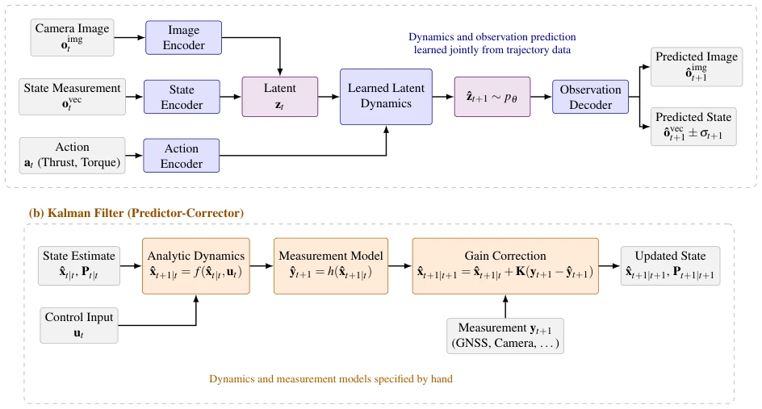
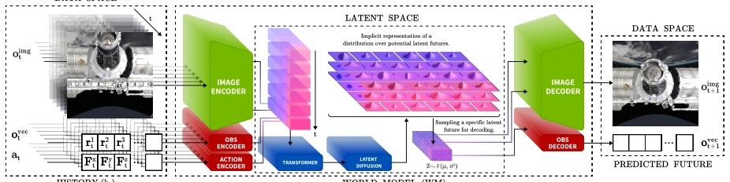
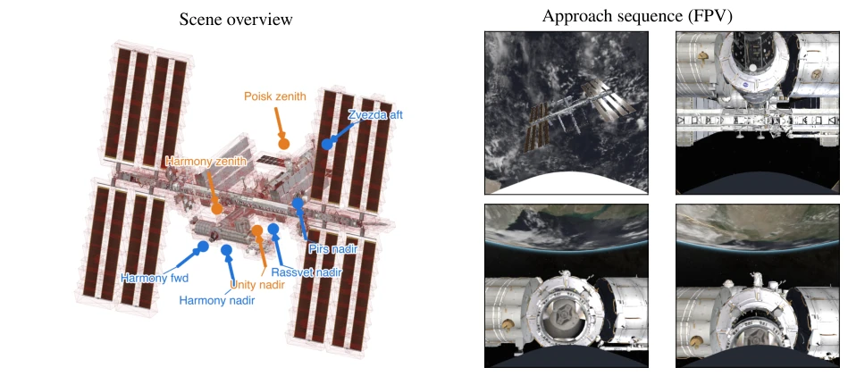
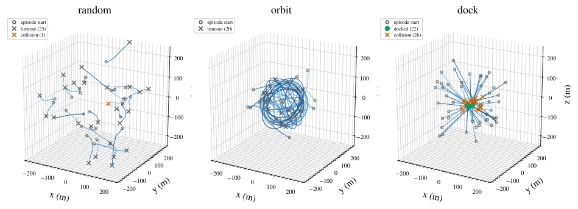
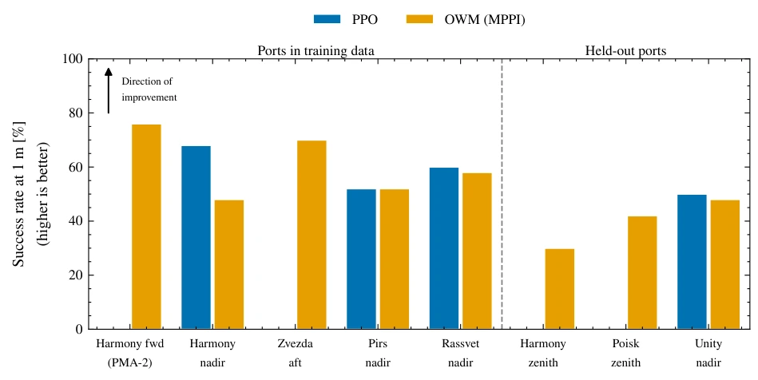
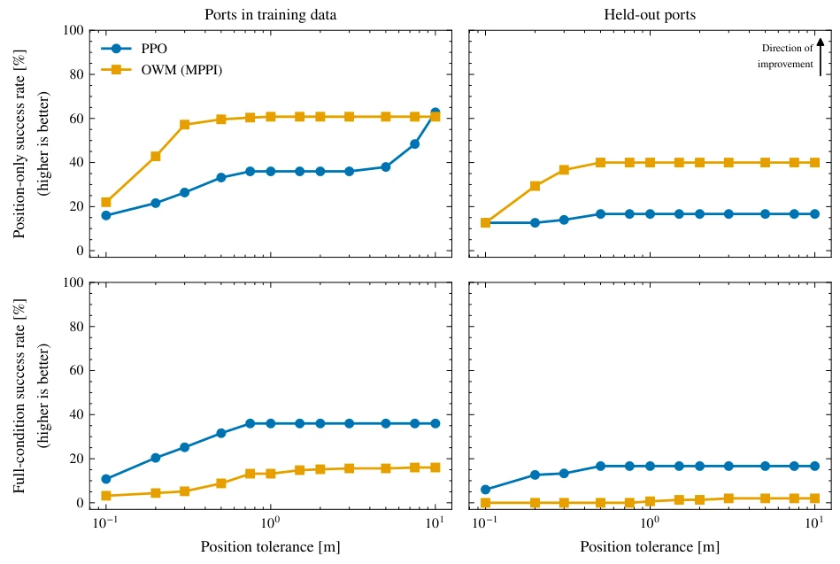
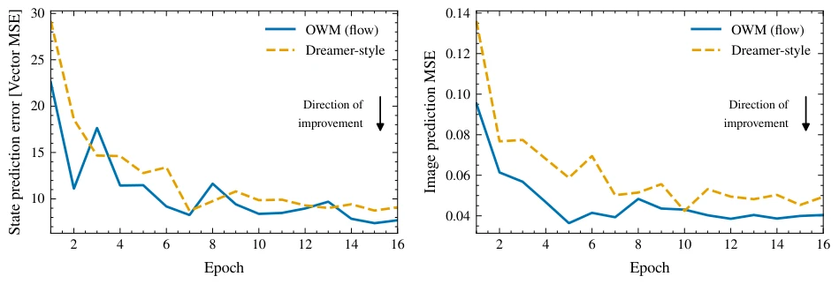
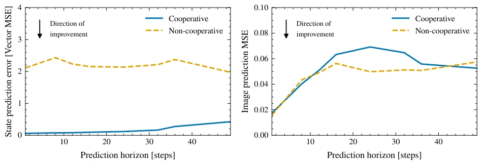
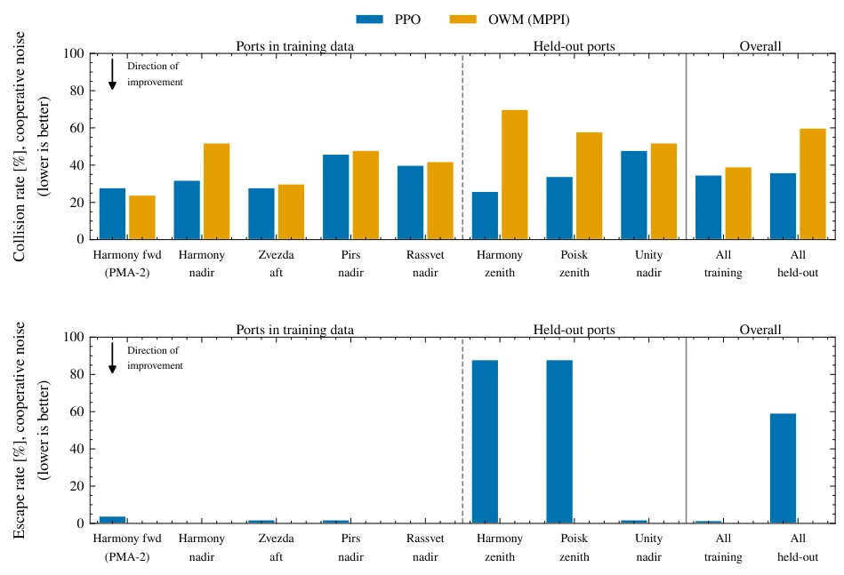
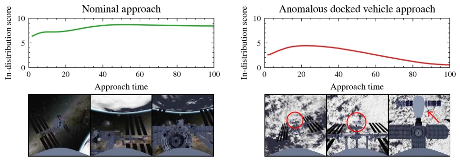

This paper forcefully integrates the World Model into the rigorous domain of spacecraft rendezvous and docking, adding a bit of "imagination" to the cold orbital mechanics. Although the aerospace community holds a deep fixation on Kalman filtering, the authors utilized JAX to generate GPU-accelerated simulations that amassed massive datasets, enabling the Transformer to succeed in orbital dynamics. However, this system is currently merely a "simulation toy" for ISS docking, still distant from real space deployment, as real-world disturbances and sensor noise cannot be fully simulated by JAX. Most interestingly, it not only predicts future observations but also detects anomalies during docking; the 98% accuracy is far more reliable than pure reinforcement learning. However, do not expect it to go to Mars immediately, as training data is entirely simulation-generated, and the computational overhead is huge; real-time deployment on onboard computers may still be a significant issue, given that onboard computing power is far inferior to H100 GPUs.
Spacecraft Rendezvous and Docking (RPO) is critical for future space exploration, yet carries extremely high risks and requires centimeter-level precision [1]. Traditional GNC methods rely on analytical models such as Kalman filtering, making it difficult to fuse rich sensor data like cameras, and assume linear Gaussian noise [5, 6]. Learning-based methods such as Reinforcement Learning (RL) can perform end-to-end control, but suffer from low sample efficiency and poor generalization, making it difficult to handle unseen ports [11, 12]. Physics-Informed Neural Networks (PINN) can encode dynamics, but cannot predict observations [10]. World Models (WM) jointly learn state-action dynamics and observation models, enabling direct processing of raw observations and providing uncertainty estimates [13, 14]. This paper aims to fill this gap, addressing the problems of multi-modal perception fusion and long-range planning in RPO, specifically how to utilize visual information to assist navigation while maintaining robustness against dynamic disturbances.

Fig. 1: World models compared with the classical predictor-corrector approach to state estimation and prediction. (a) A world model learns encoders, latent dynamics, and an observation decoder jointly from trajectory data. It ingests raw measurements—camera imagery and noisy kinematic state—together with the applied action, and predicts a distribution over future observations, from which per-timestep uncertainty estimates follow directly. (b) A Kalman filter propagates a state estimate through analytic dynamics and measurement models, correcting the prediction with a gain-weighted measurement residual.
The overall workflow is: JAX-based AstroJAX simulation generates data -> trains the OWM World Model -> combines MPPI planning and control. The OWM architecture employs a Transformer backbone, encoding kinematic states and camera images into Latent Tokens. The core innovation lies in using a Flow Matching head to predict latent state residuals in the latent space, rather than directly predicting observation pixels, which avoids redundancy in pixel-level details [22, 23]. The simulation environment supports GPU parallelism and can generate millions of state-action transitions. During training, multi-modal reconstruction loss and latent space round-trip anchoring are employed to ensure the Latent space remains faithful to original observations. In the planning stage, the World Model is utilized for multi-step prediction, generating control sequences through MPPI sampling. Additionally, the model incorporates a temporal attention mechanism, handling temporal dependencies via Rotary Positional Encoding, ensuring context consistency in long-range planning and supporting autoregressive rolling prediction.

Fig. 2: The Out-of-this-World-Model architecture. A history window ht of camera frames, kinematic state measure- ments, and actions is encoded into a vector of latent tokens per timestep. A factorized space–time transformer attends across tokens within each timestep and causally across timesteps. A flow-matching head transports Gaussian noise to a sample of the latent residual ∆ˆzt+1; added to the current latent this gives the next latent state ˆzt+1 = zt +∆ˆzt+1, and repeated draws with different noise realizations produce a distribution over futures. The sampled latent is appended to the token history and the model rolls forward autoregressively in latent space; an observation decoder maps any latent back to a predicted image and state with an associated uncertainty.

Fig. 3: The ISS docking environment. Left: isometric view of the station model overlaid with the 313 axis-aligned collision boxes (red) used for keep-out checking and the goal poses of the eight docking ports. Blue markers label the five ports flown in the training data and orange markers the three ports held out for evaluation; arrows indicate the approach corridors. Right: the chaser’s first-person camera view—the visual observation the world model consumes— at four points along a successful docking approach to the Harmony forward port.

Fig. 4: Training trajectories from the published dataset in the station-centered frame, one panel per behavior policy, with episode starts and outcome-coded episode ends. Random walks drift across the domain without goal direction, orbit trajectories circumnavigate the station across a range of radii and plane orientations, and dock trajectories con- verge on the sampled port poses, with approaches that clip station structure recorded as collisions.
The dataset comprises 500,000 transitions, covering three strategies: random drift, orbiting, and docking. The training set includes 5 docking ports, while the test set includes 3 unseen ports to evaluate generalization. The baseline is PPO Reinforcement Learning. Results show that WM+MPPI achieves a 53% docking success rate on training ports, outperforming PPO's 29%; during generalization to unseen ports, it doubles the performance (40% vs 17%). Additionally, the model can utilize prediction uncertainty to detect anomalies (such as untrained docking vehicles), achieving an accuracy of 98%. The high fidelity of the simulation environment (including atmospheric drag and gravity harmonics) ensures the robustness of the strategy. Experiments also indicate that noise in non-cooperative modes significantly affects long-range state prediction, whereas image prediction remains relatively robust, demonstrating the effectiveness of multi-modal fusion.

Fig. 8: Docking success rate by port and algorithm under cooperative sensor noise, over 50 rollouts per port. An attempt succeeds if its closest approach to the port comes within 1 m and the chaser never contacts station structure during the episode. Ports left of the divider appear in the training data; Harmony zenith, Poisk zenith, and Unity nadir are held out.

Fig. 9: Collision-voided success rate against position tolerance under cooperative sensor noise, pooled over the ports in the training data (left) and the held-out ports (right), over 50 rollouts per port. Top: position-only success, in which the closest approach comes within the tolerance. Bottom: the full contact conditions, which additionally bound the velocity, attitude error, and body rate at that approach. Curves are shown for the world-model planner and the PPO baseline. The two rows expose the central trade-off; the planner leads on position-only success through reliable acquisition, while PPO leads on the full contact conditions through its slower, better-pointed terminal approach.
其他图片Other Figures

Fig. 6: World model validation performance by training epoch. Left: state reconstruction error on held-out trajectories under fully autoregressive rollout. Right: image reconstruction loss on the same rollouts.

Fig. 7: Prediction error against rollout horizon for each sensor noise preset. Left: state prediction error. Right: image prediction loss. Non-cooperative range-proportional noise degrades long-horizon state prediction more than image predictions.

Fig. 10: Collision rate (top) and escape rate (bottom) by port and algorithm under cooperative sensor noise, over 50 rollouts per port. The collision rate is the fraction of rollouts in which the chaser entered a station keep-out box at any point; the escape rate is the fraction in which the chaser left the 750 m operational domain. The world-model planner never escapes, so every one of its rollouts presses a full approach and attempts a dock.

Fig. 11: In-distribution scores as an anomaly signal on two representative approaches.